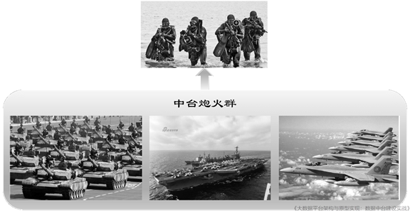
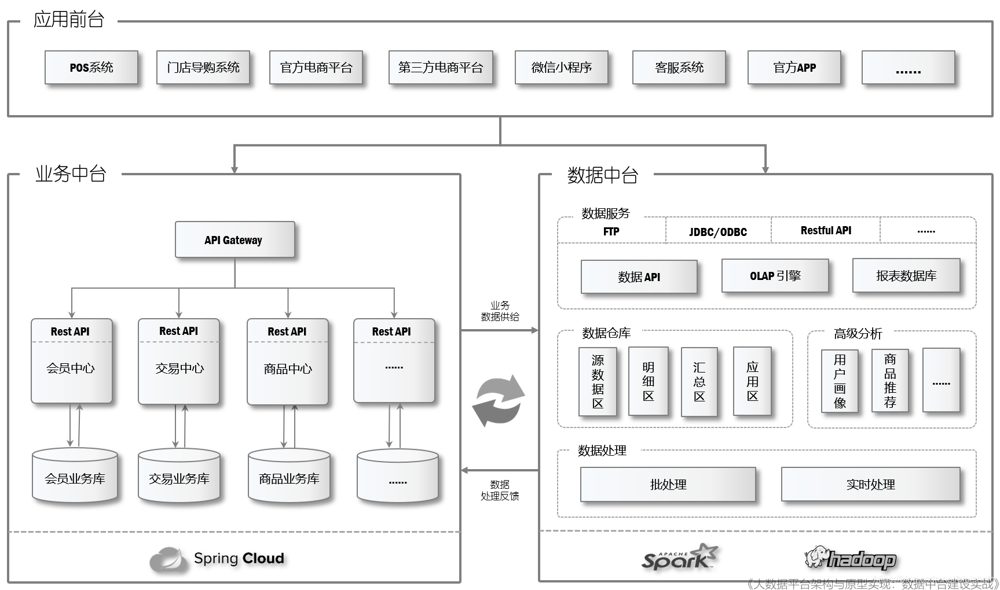

中台架构详解（上）| 建设数据中台系列（四）
中台打破了应用系统的壁垒，从企业全局梳理和规划业务程，重构了组织架构、业务架构与IT 架构。
在梳理了企业的IT 现状并回顾了SOA 的历史之后，我们需要对中台架构进行一番详细的介绍， 阿里巴巴 的Aliware 团队曾经给中台下过这样的定义：
将企业的核心能力随着业务不断发展以数字化形式沉淀到平台，形成以服务为中心，由业务中台和数据中台构建起数据闭环运转的运营体系，供企业更高效地进行业务探索和创新，实现以数字化资产的形态构建企业核心差异化竞争力。
现在中台战略常被简单地概括为“大中台，小前台”，意思是说将企业的核心业务能力沉淀和聚集到由业务中心组成的中台层上，前台应用以中台为支撑，向轻量化、敏捷化转变。本文核心观点援引自作者所著的 《大数据平台架构与原型实现：数据中台建设实战》 一书，全书对数据中台的理念、架构和具体实现做了详细论述。 （注：本文已由CSDN云计算公众号首发）

图1 是《企业IT 架构转型之道：阿里巴巴中台战略思想与架构实战》一书中给出的关于中台战略非常形象的描述。这张图描述的是Mei军现行的作战模式，在一线战场，Mei军通常以班为单位组织军事行动，这种极小型团队行动敏捷，容易捕获战机，一旦发现敌情就通过指挥系统呼叫强大的炮火和空中支援给敌军以重创。美军的这种战场组织阵型与中台架构的思想是一致的，战斗小组就是“小前台”，强大的炮火群和空中力量是“大中台”。在强大中台的有力支撑下，前端在进行业务运营和创新时会变得非常高效且灵活，企业可以根据最新的市场动态展开各种尝试和调整，一旦发现并验证了新的市场机遇，就可以调集中台的强大能力迅速跟进，抢占市场。
中台作为面向互联网时代的企业新一代IT 架构最大的威力不在于解决眼前的问题，而是系统性、结构性地重组企业的IT 生态系统、业务架构及组织架构，它能帮助企业从本质上提升竞争力，降低成本。它将带给企业如下的能力与收益：
-
应对未来所需的更快的业务创新和成本更低的业务探索；
-
给企业带来核心竞争力的提升，提质转型、降本增效；
-
给业务快速响应和创新带来的业务价值；
-
给信息中心带来组织职能转变的机会；
-
共享服务架构能提升企业整体效能。
1 中台架构概述
以中台的视角看待企业的整个IT 生态，可以将其分成前台、中台及后台三大组成部分，三者的定位如下：
-
前台：由直接面向市场和终端用户的业务应用组成，负责支撑企业的前端业务；
-
中台：由按业务领域细分的服务中心组成，负责支撑企业的共享业务；
-
后台：由企业内部业务系统组成，如生产、库存、物流等管理系统。
前台与中台的关系是：业务中台负责提供企业范围内共享的基础业务服务，前台应用会对这些基础业务服务进行组织编排，快速地在前端以产品形式将业务能力展开，以适应日新月异的市场变化。
中台与后台的关系并不像前台与中台的关系那样紧密，中台架构是为了让企业拥有开放、创新和灵活的市场应变能力而提出的，这对于生产、库存、物流等后端系统的影响并不大，并且这些系统需要严谨和规范的组织与管理，因而会保持相对传统的组织架构与生态。
由此可见，中台在企业的整体业务体系中起着核心作用，而建设中台的最大挑战也来自对中台层各服务中心业务能力的提炼和萃取。
以零售和消费品行业的企业为例，往往会有如下一些面向市场和终端消费者的服务中心：
-
用户中心：负责用户信息的全面管理，建设和维护会员体系，制定并推行会员运营策略；
-
商品中心：负责商品的全面管理，包括SKU、品类及商品相关的各种属性、标签的管理；
-
交易中心：负责统一管理线上和线下所有的购物车、订单及交易数据，并提供交易相关的各种服务；
-
营销中心：负责全渠道的营销，对营销活动的全过程进行管理。
以上四个是比较有代表性的业务中心，每一家企业还可能会基于自己的业务模式组织其他诸如支付、门店、内容、促销等中心。从服务中心的职责和定位我们也可以发现中台的一个重要特征，那就是应用系统的边界被彻底地打破了，不会再有CRM 和OMS 这样的孤立业务系统了，而是将它们所承载的共享业务能力分拆并重组到了各个业务中心，每个业务中心对接和服务的是来自企业全渠道的需求，如何能支撑这些复杂多变的前端需求是建设中台的挑战之一。针对每个业务中心，在业务和技术上都必须要有专业的架构师带领团队来统一梳理这些需求，识别哪些需求应该由中台实现，哪些需求应该由前台实现，这是确保中台架构能够合理存在并稳定发挥作用的重要前提，这个过程不会一蹴而就，而需要在不断的迭代和试错中逐渐明了。不难想象，如果这种切分不够合理就会出现如下两种结果：
-
如果本应属于共享的服务与逻辑切分到前台，就会导致前台应用过“重”，且不可避免地会出现重复建设问题，因为前台应用无法从中台获得相关支持；
-
如果过多的非共享服务与逻辑切分到中台，就会导致中台服务的复用性变差，前台应用无法直接调用，因此会产生很多“副作用”和“连带后果”。
以上两种情形在现实里时有发生，这是企业打磨中台的一个必经阶段，也是团队磨炼对业务认知和对技术把控能力的一场“修行”。
就“服务”这个概念而言，中台对外提供的“服务”与SOA 中倡导的“服务”并没有本质上的差别。在某种程度上，中台的定位会更加有助于实现真正可重用的“服务”，因为中台不再局限于某一个应用上，而是超脱于应用之上，宏观地看待一个“服务”如何能支持不同场景下的共性需求。因此，那些在SOA 中对服务粒度进行界定和组织的方法依然是值得借鉴的，特别是对基础服务、复合服务及业务流程服务这三个服务层次的划分是非常实用的。
作为一个呼应，我们来看一下中台架构下“会员管理”是如何进行的：原有的CRM 系统将不复存在，取而代之的是“用户中心”，用户中心沉淀了与用户相关的共享服务，会员注册就是其中之一，前台应用系统进行会员注册时会调用用户中心上的会员注册API 来实现，当然，前台应用可能需要对用户数据进行一定的处理、转换以适配统一的API 规范，这样前台各个应用不再维护自己的“用户模块”，因此也不再需要同步会员数据。
前面我们讨论的“中台”更具体地说是指业务中台，对于中台的另一个组成部分“数据中台”来说，它更侧重于企业数据的统一收集和处理。相对于应用系统而言，数据的平台化要相对容易一些，这也是很多企业早期就能建立数仓这种中心化、平台化的系统，而在应用系统上却陷入烟囱式的生态的原因之一。不过数据中台并不是传统数仓升级换代那么简单，从技术上讲，数据中台完全构建在大数据平台上，数仓是数据中台的重要组成部分，但远远不是全部。数据中台通常还要具备实时的数据处理能力和高级的算法分析能力，当数据处理完成后，数据中台还要提供强大的“数据服务”，能将结果数据通过各种协议以实时或批量的方式提供给业务中台或应用前台。
此外，业务中台的建立也会对数据中台的建设起到很大的促进作用。一方面由于业务的梳理和中心化，使采集业务数据变得相对简单，业务中心的后台数据库将是数据中台主要的外围数据源；另一方面，业务中台对业务的切分和领域建模将对构建数据中台上的数仓和数据服务有很大的指导意义，例如，每个业务中心天然就是一个大的数据主题，相应地，也有会有一个独立的API 的namespace 等。
下面我们把业务中台和数据中台放在一起，结合前面举例的零售和消费品行业来看看一个完整的中台架构，如图2 所示。

这是一张混合了技术和业务的中台逻辑架构示意图，前台应用部分我们将零售和消费品行业需要对接消费者的若干应用系统一一列举了出来，但是在中台架构下它们已经和传统的“应用系统”有了很大的差别，变得非常“轻量”。过去很多自行实现的业务功能都通过调用业务中台的各个业务中心完成了，如前面列举的会员注册功能，在中台架构下都是调用会员中心上的统一接口完成的。与此同时，各业务中心的数据都将通过数据中台上的数据采集组件采集到大 数据平台 上，然后通过批处理和实时处理机制构建出企业的数仓体系和高级数据分析能力，最后通过构建数据API （Web 服务）、OLAP 及专有的报表数据库等手段，将结果数据以Restful API、JDBC/ODBC 或FTP 等形式提供给外部使用。
2 中台的技术体系
中台由阿里巴巴提出并在业界获得广泛认可之后，阿里巴巴就一直希望通过 阿里云 平台向企业用户推广一整套的中台技术解决方案，这套方案就是Aliware——面向企业级互联网架构的PaaS 服务。Aliware 包含了企业级分布式应用服务（EDAS）、消息队列（MQ）、全局事务服务（GTS）等，这些服务涵盖了企业应用开发涉及的各个方面。但是中台并非必须构建在阿里云的这些PaaS 服务上，实际上，Aliware 是将当前企业级应用开发的主流技术和框架封装成PaaS 服务供开发者直接使用，所以本质上Aliware 与中台架构并没有必然的关系。
中台作为一种生态系统级的架构，不会受底层技术的制约，反而倚重和遵循业界主流的技术体系，特别是开源的技术平台与框架。简单地说：
-
业务中台的主要技术体系是：微服务；
-
数据中台的主要技术体系是：大数据。
与技术相配套的是设计思想和方法论，现在微服务的主流设计思想是领域驱动设计，大数据的主要设计思想是 数据仓库 理论。我们来分别介绍一下这两种技术与它们使用的设计理论。
2.1 业务中台技术体系
1． 微服务
微服务架构最大的特征是解构了过去的单体应用，按照业务功能对系统进行了更细粒度的切分，每一个微服务都是一个可独立部署的单元，微服务内部高内聚，微服务之间低耦合。系统被微服务化之后会在很多方面得到提升和改善，过去在单一应用服务器和数据库服务器上部署的系统将转变为纯正的分布式系统，部署于多台服务器上，这相当于赋予了系统水平伸缩能力，同时局部节点的失效也不会再导致整个系统宕机，而是可以被限制在有限影响范围之内。
微服务的这些优势使其在最近几年几乎成了企业级应用的架构标准，与之相配套的是一系列基础设施服务和支撑技术。
-
服务注册与发现；
-
服务配置管理；
-
服务网关（API Gateway）；
-
事件/消息总线；
-
负载均衡；
-
容错与熔断；
-
监控与报警；
-
安全和访问控制；
-
日志收集与处理。
经过多年的沉淀和积累，业界在上述领域有很多成熟工具和框架，其中最主流的一站式方案非Spring Cloud 莫属。
在微服务架构逐渐形成规模之后，就会对硬件资源虚拟化和自动化部署提出要求，与此同时，伴随着Docker 的崛起，人们发现容器化与微服务是一组绝佳搭档，再配合DevOps 技术的推动，最终在业界形成了“微服务 + 容器技术（Dockers + Kubernetes）+ DevOps”三位一体的微服务生态体系，这些技术汇集在一起为微服务的落地和持续演进铺平了道路。
2．领域驱动设计
恰到好处的微服务设计是一项很有挑战性的工作，识别、界定与设计微服务考验的是开发人员对业务的理解和设计能力，这需要对业务反复梳理和提炼，再经过仔细地斟酌和拿捏才能有一个比较好的方案。这与技术框架没有太大的关系，考验的是设计人员的“内功心法”，也就是设计能力和对业务理解的透彻程度。以往诸多项目的经验表明，糟糕的设计会极大地削弱微服务的作用，让其变得粗糙、难以被复用。过去，开发人员一直使用一些常规的方法论来设计微服务，如面向对象（OOD）的设计思想，但是取得的效果并不理想，直到后来领域驱动设计（Domain-Driven Design，也被简称为DDD）被社区发掘出来，逐渐成了微服务事实上的设计理论。
领域驱动设计最早起源于Eric Evans 在2003 年撰写的一本名为Domain-Driven Design: Tackling Complexity in the Heart of Software 的著作，这本书全面系统地阐述了领域驱动设计的思想和方法论。早年间DDD 还较为小众，没有在业界得到推广，但是伴随着微服务的崛起，人们意识到领域驱动设计的诸多思想对于设计微服务有莫大的帮助，一个特别典型的例子就是根据限界上下文（Bounded Context）来划定微服务边界。
简单总结一下，在技术上微服务是实现业务中台的最佳技术方案，再借助领域驱动设计，中台的业务中心可以构建得足够灵活和强大。
2.2 数据中台技术体系
在数据中台上，目前的技术选型也是非常统一的，基于Hadoop、Spark 的大数据技术是当前构建数据中台的主流方案，本系列也是以大数据技术为基础来讨论如何建设数据中台的。
大数据涉及的技术非常多，在数据采集、存储、消息队列、批处理、实时处理、作业调度等诸多环节上都有对应的技术和工具来完成相关工作，在后续的章节里我们会逐一讨论它们，但通常人们会用Hadoop、Spark 来指代大数据技术，因为两者不单单是技术，更代表着一个技术生态圈，在它们背后有一组相关的配套工具。
对于建设数据中台的方法论（确切地说是数据中台的批处理部分），传统的数据仓库理论依然是主要的方法论。数据中台的使命是将企业的全域数据收集起来，然后规范地处理它们，最后给到前端应用。对于如何规范地处理数据，目前业界最为成熟的理论是数据仓库（数仓）。在经过数仓体系的治理之后，最终会在数仓的最上层得到高质量的数据集，然后通过Web Service、ODBC、JDBC 等多种数据服务对外发布出去。
简单总结一下，在技术上Hadoop、Spark 是实现数据中台的主要技术方案，遵循数据仓库理论对数据进行组织和处理，在最上层封装为数据服务的形式去支持前台和业务中台对数据的需求。
关于作者：耿立超，架构师，14年IT系统开发和架构经验，对大数据、企业级应用架构、SaaS、分布式存储和领域驱动设计有丰富的实践经验，热衷函数式编程。目前负责企业数据中台的架构设计和开发工作，对Hadoop/Spark 生态系统有深入和广泛的了解，参与过Hadoop商业发行版的开发，曾带领团队建设过数个完备的企业数据平台，个人技术博客：https://laurence.enlightgram.com/
中台架构详解（上）| 建设数据中台系列（四）
https://laurence.enlightgram.com/bigdata/data-middle-platform-4-architecture-part1/